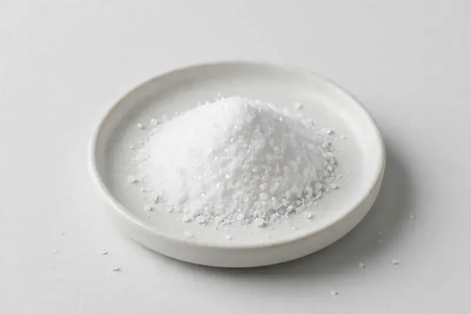

D-Mannose — fermentation-derived powder commonly at 99%+ purity for urinary-comfort formulations.

Overview
D-Mannose is a simple sugar produced commercially by fermentation and traded as a high-purity crystalline powder, commonly 99%+ assay. It features in capsule, sachet and powder drink concepts positioned around urinary comfort and feminine wellness. As a Xi'an-based trading company sourcing through vetted partner producers, we align on the buyer's purity target and confirm feasibility honestly.
Specifications below reflect commonly requested options in the market — not a stock list. Share your target spec and we'll confirm exactly what we can supply, honestly.
| Specification | Details |
|---|---|
| Botanical identity | Fermentation-derived D-Mannose crystalline powder |
| Marker compound | D-Mannose — commonly requested: 99%+ assay, crystalline powder form |
| Appearance | White fine powder |
| Mesh size | Typically 80–100 mesh (confirm per inquiry) |
| Testing | COA/TDS arranged on request; scope agreed per your spec |
Applications
Documentation
We don't claim in-house labs or certifications we don't hold. COA and TDS documents can be arranged on request, and testing scope is agreed against your specification before supply.
FAQ
Related products
Berberis aristata
Key marker: Berberine
View specs →Purified mineral pitch
Key marker: Fulvic Acid
View specs →Eurycoma longifolia
Key marker: Eurycomanone
View specs →Inulin (Cichorium intybus)
Key marker: 90%+ inulin
View specs →Humulus lupulus
Key marker: Xanthohumol & flavonoids
View specs →Send your target spec and volumes — we'll respond with a tailored quotation.
Request a Quote